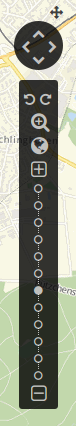
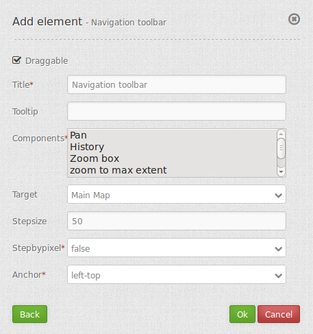

Navigation Toolbar (Zoombar)¶
The Navigation Toolbar element provides a control to pan and zoom, similar to the OpenLayers PanZoomBar control.
{kind=link}
Configuration¶
{kind=link}
- Draggable: element is draggable or not, default true.
- Title: Title of the element. The title will be listed in “Layouts” and allows to distinguish between different buttons. It will be indicated if “Show label” is activated.
- Tooltip: text to use as tooltip.
- Components: components of the navigation toolbar, default all selected.
- Target: Id of Map element to query.
- Step size: step value for pan.
- Step by pixel: step type “by pixel”/”percent”, false = percent, default is false.
- Anchor: navigation toolbar alignment, default is ‘left-top’ (use inline f.e. in sidebar).
YAML-Definition:¶
tooltip: 'Navigation Toolbar' # text to use as tooltip
components: array("pan", # components of the navigation toolbar, default all selected
"history","zoom_box",
"zoom_max","zoom_in_out",
"zoom_slider")
target: ~ # Id of Map element to query
stepSize: 50 # step value for pan
stepByPixel: false # step type "by pixel"/"percent", false = percent, default is false
anchor: 'inline'/'left-top'/ # navigation toolbar alignment, default is 'left-top'
'left-bottom'/'right-top'/ # use inline f.e. in sidebar
'right-bottom'
draggable: true # element is draggable or not, default true
Class, Widget & Style¶
- Class: Mapbender\CoreBundle\Element\ZoomBar
- Widget: mapbender.element.zoombar.js
- Style: mapbender.element.zoombar.css
HTTP Callbacks¶
None.
JavaScript API¶
None.
JavaScript Signals¶
None.